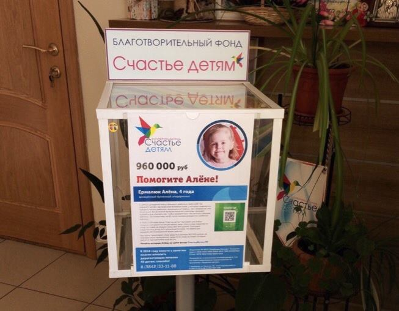

В маркетинге благотворительности есть такой неоригинальный ход — давать «выбор» человеку. Все эти «твоя экосумка убережёт дельфина», «отключи электричество на час, сохрани дерево» и самое популярное — «чашка кофе может спасти ребёнка».
Правда в том, что эта проторенная очевидная дорога ведёт в тупик.
Получатель месседжа, прошедший горнило эволюции, никогда не выберет между удовольствием и благотворительностью. Вернее выберет. Не вас.
Но в чашке его ароматного латте за 200 рублей будут не только зёрна кофе. Там будут плавать ещё и зёрна сомнения в моральности выбора. Которые, того и гляди, норовят разрастись в чувство вины.
К счастью, человек — животное умное, и не с такими чувствами боролся. Поэтому приближающуюся вину он привычно заблокирует у себя будущей слепотой ко всем месседжам благотворителей.
Поэтому, пейте кофе и наслаждайтесь жизнью. Появится желание — вы знаете где нас искать :)
